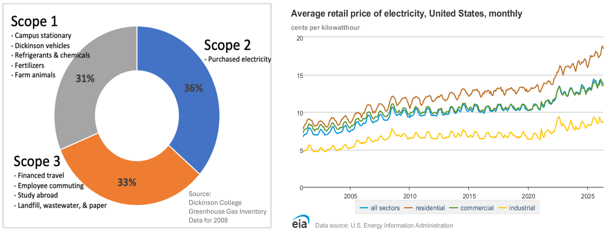

Last updated: 2026-08-19
Checks: 6 1
Knit directory: dickinson_power/
This reproducible R Markdown analysis was created with workflowr (version 1.7.2). The Checks tab describes the reproducibility checks that were applied when the results were created. The Past versions tab lists the development history.
The R Markdown file has unstaged changes. To know which version of
the R Markdown file created these results, you’ll want to first commit
it to the Git repo. If you’re still working on the analysis, you can
ignore this warning. When you’re finished, you can run
wflow_publish to commit the R Markdown file and build the
HTML.
Great job! The global environment was empty. Objects defined in the global environment can affect the analysis in your R Markdown file in unknown ways. For reproduciblity it’s best to always run the code in an empty environment.
The command set.seed(20260107) was run prior to running
the code in the R Markdown file. Setting a seed ensures that any results
that rely on randomness, e.g. subsampling or permutations, are
reproducible.
Great job! Recording the operating system, R version, and package versions is critical for reproducibility.
Nice! There were no cached chunks for this analysis, so you can be confident that you successfully produced the results during this run.
Great job! Using relative paths to the files within your workflowr project makes it easier to run your code on other machines.
Great! You are using Git for version control. Tracking code development and connecting the code version to the results is critical for reproducibility.
The results in this page were generated with repository version f60de55. See the Past versions tab to see a history of the changes made to the R Markdown and HTML files.
Note that you need to be careful to ensure that all relevant files for
the analysis have been committed to Git prior to generating the results
(you can use wflow_publish or
wflow_git_commit). workflowr only checks the R Markdown
file, but you know if there are other scripts or data files that it
depends on. Below is the status of the Git repository when the results
were generated:
Ignored files:
Ignored: .DS_Store
Ignored: .Rhistory
Ignored: .Rproj.user/
Ignored: analysis/.DS_Store
Ignored: analysis/.Rhistory
Ignored: analysis_to-fix/.DS_Store
Ignored: data/.DS_Store
Ignored: data/FY25 Main Meter Data.xlsx
Ignored: data/building_list_FY25_updated.xlsx
Ignored: data/graph_data_life_exp.csv
Ignored: data/housing_counts.csv
Ignored: keys/.DS_Store
Ignored: output/annual_kwh.csv
Ignored: output/building_check.csv
Ignored: output/building_check.xlsx
Ignored: output/buildings_graph.csv
Ignored: output/daily_kwh.csv
Ignored: output/kwh_academic_2026-03-16.csv
Ignored: output/kwh_academic_2026-03-17.csv
Ignored: output/kwh_academic_2026-03-18.csv
Ignored: output/kwh_academic_2026-03-22.csv
Ignored: output/kwh_academic_2026-03-23.csv
Ignored: output/kwh_academic_2026-03-25.csv
Ignored: output/kwh_academic_2026-03-30.csv
Ignored: output/kwh_academic_2026-04-07.csv
Ignored: output/kwh_academic_2026-04-13.csv
Ignored: output/kwh_academic_2026-04-26.csv
Ignored: output/kwh_annual.csv
Ignored: output/kwh_annual_2026-03-04.csv
Ignored: output/kwh_annual_2026-03-12.csv
Ignored: output/kwh_annual_2026-03-16.csv
Ignored: output/kwh_annual_2026-03-17.csv
Ignored: output/kwh_annual_2026-03-18.csv
Ignored: output/kwh_annual_2026-03-22.csv
Ignored: output/kwh_annual_2026-03-23.csv
Ignored: output/kwh_annual_2026-03-25.csv
Ignored: output/kwh_annual_2026-03-30.csv
Ignored: output/kwh_annual_2026-04-07.csv
Ignored: output/kwh_annual_2026-04-13.csv
Ignored: output/kwh_annual_2026-04-26.csv
Ignored: output/kwh_annual_20260225.csv
Ignored: output/kwh_annual_20260226.csv
Ignored: output/kwh_daily.csv
Ignored: output/kwh_daily_2026-03-04.csv
Ignored: output/kwh_daily_2026-03-12.csv
Ignored: output/kwh_daily_2026-03-16.csv
Ignored: output/kwh_daily_2026-03-17.csv
Ignored: output/kwh_daily_2026-03-18.csv
Ignored: output/kwh_daily_2026-03-22.csv
Ignored: output/kwh_daily_2026-03-23.csv
Ignored: output/kwh_daily_2026-03-25.csv
Ignored: output/kwh_daily_2026-03-30.csv
Ignored: output/kwh_daily_2026-04-07.csv
Ignored: output/kwh_daily_2026-04-13.csv
Ignored: output/kwh_daily_2026-04-26.csv
Ignored: output/kwh_daily_20260225.csv
Ignored: output/kwh_daily_20260226.csv
Ignored: output/kwh_main_annual.csv
Ignored: output/kwh_main_daily.csv
Unstaged changes:
Modified: analysis/_site.yml
Modified: analysis/index.Rmd
Note that any generated files, e.g. HTML, png, CSS, etc., are not included in this status report because it is ok for generated content to have uncommitted changes.
These are the previous versions of the repository in which changes were
made to the R Markdown (analysis/index.Rmd) and HTML
(docs/index.html) files. If you’ve configured a remote Git
repository (see ?wflow_git_remote), click on the hyperlinks
in the table below to view the files as they were in that past version.
| File | Version | Author | Date | Message |
|---|---|---|---|---|
| Rmd | f60de55 | maggiedouglas | 2026-08-15 | Lots of formatting… |
| html | f60de55 | maggiedouglas | 2026-08-15 | Lots of formatting… |
| html | 4ebaf60 | maggiedouglas | 2026-05-05 | Build site. |
| html | 3978d3a | maggiedouglas | 2026-04-13 | Build site. |
| html | f18d90b | maggiedouglas | 2026-04-07 | Build site. |
| html | 4edaaa1 | maggiedouglas | 2026-03-30 | Build site. |
| html | 7c136f1 | maggiedouglas | 2026-03-30 | Build site. |
| html | f13922e | maggiedouglas | 2026-03-25 | Build site. |
| html | 4ab0c63 | maggiedouglas | 2026-03-23 | Build site. |
| html | 2a86883 | maggiedouglas | 2026-03-04 | Build site. |
| html | e50511f | maggiedouglas | 2026-03-04 | attempt to update website |
| html | 5f7e5dd | maggiedouglas | 2026-03-04 | Build site. |
| html | 661b13b | maggiedouglas | 2026-02-14 | Build site. |
| html | 40c81af | maggiedouglas | 2026-02-14 | Build site. |
| html | ba3286e | maggiedouglas | 2026-02-14 | build pages for website |
| Rmd | b4e85a1 | maggiedouglas | 2026-01-07 | Start workflowr project. |
This project explores electricity use at Dickinson College to support environmental and fiscal sustainability on campus. The students in ENST 325: Environmental Data Analysis in Practice generated this report in spring 2026 with the support and collaboration of the Center for Sustainability Education (CSE) and Facilities Management.
Dickinson College prides itself on its commitment to sustainability and has been carbon neutral since 2020 (Carbon Neutrality FAQ, n.d.). Electricity usage has historically accounted for about a third of carbon emissions at the College and played a key role in the college becoming climate neutral (Leary 2025). A 3-megawatt solar photovoltaic array, transition to LED lighting, and purchase of Renewable Energy Credits (RECs) were major contributors to Dickinson reducing its carbon footprint by 50% from 2008 to 2023 (Leary 2025). The College maintains carbon neutrality by purchasing offsets for the remaining carbon emissions. Further electricity savings would allow the College to reduce costs and continue advancing its climate commitments. Such investments are likely to be especially fruitful as the cost of electricity continues to rise (EIA 2026).
knitr::include_graphics("assets/carbon_and_costs.png", error = FALSE)
The overarching goal of this project is to better understand campus electricity use and identify opportunities for further reduction.
Focusing on Fiscal Year 2025, this project seeks to:
A secondary goal of this project is to provide experiential learning opportunities for Dickinson students. This work was conducted as part of an upper-level data analysis class, in which students learned to analyze environmental data in the R Statistical Language.
We wish to extend a special thanks to Mike Kiner, Director of Trades, for sharing his time and expertise for the duration of this project. We also thank Chris Sharples of SHoP Architects and all attendees at our final presentation in April 2026. They offered valuable insights that informed our interpretation and recommendations. That said, any and all mistakes are our own.
Carbon Neutrality FAQ. (n.d.). Dickinson College. Retrieved August, 2026 from https://www.dickinson.edu/homepage/1340/carbon_neutrality_faq
Energy Information Administration (EIA). (2026). Electricity Data Browser. https://www.eia.gov/electricity/data/browser/
Leary, N. (2025). Dickinson College Greenhouse Gas Inventory 2008-2023. Center for Sustainability Education.
sessionInfo()R version 4.6.0 (2026-04-24)
Platform: x86_64-apple-darwin20
Running under: macOS Ventura 13.7.8
Matrix products: default
BLAS: /Library/Frameworks/R.framework/Versions/4.6-x86_64/Resources/lib/libRblas.0.dylib
LAPACK: /Library/Frameworks/R.framework/Versions/4.6-x86_64/Resources/lib/libRlapack.dylib; LAPACK version 3.12.1
locale:
[1] en_US.UTF-8/en_US.UTF-8/en_US.UTF-8/C/en_US.UTF-8/en_US.UTF-8
time zone: America/New_York
tzcode source: internal
attached base packages:
[1] stats graphics grDevices utils datasets methods base
other attached packages:
[1] here_1.0.2
loaded via a namespace (and not attached):
[1] vctrs_0.7.3 cli_3.6.6 knitr_1.51 rlang_1.2.0
[5] xfun_0.59 stringi_1.8.7 otel_0.2.0 promises_1.5.0
[9] jsonlite_2.0.0 workflowr_1.7.2 glue_1.8.1 rprojroot_2.1.1
[13] git2r_0.36.2 htmltools_0.5.9 httpuv_1.6.17 sass_0.4.10
[17] rmarkdown_2.31 jquerylib_0.1.4 evaluate_1.0.5 tibble_3.3.1
[21] fastmap_1.2.0 yaml_2.3.12 lifecycle_1.0.5 whisker_0.4.1
[25] stringr_1.6.0 compiler_4.6.0 fs_2.1.0 Rcpp_1.1.1-1.1
[29] pkgconfig_2.0.3 rstudioapi_0.19.0 later_1.4.8 digest_0.6.39
[33] R6_2.6.1 pillar_1.11.1 magrittr_2.0.5 bslib_0.11.0
[37] tools_4.6.0 cachem_1.1.0